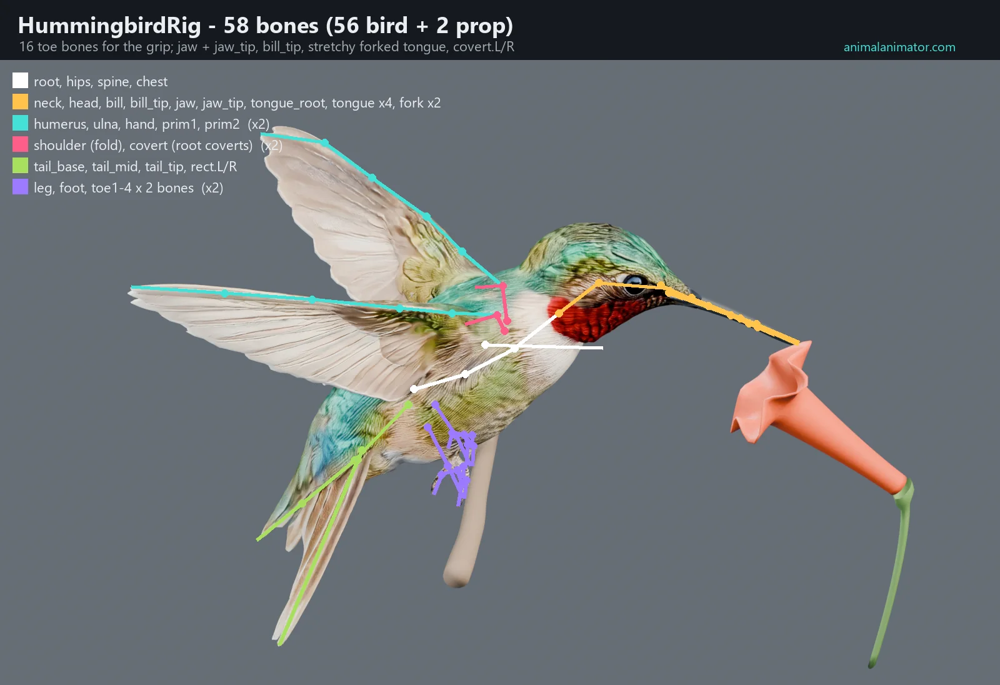
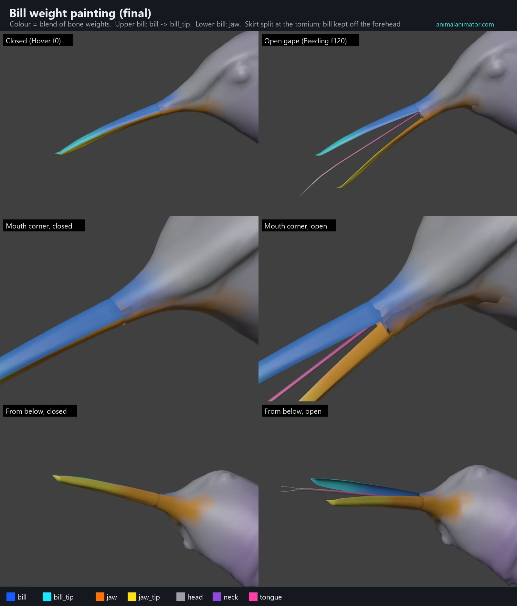
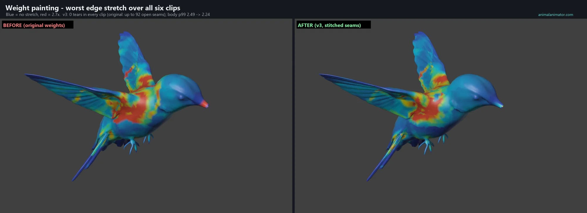
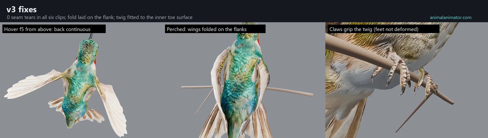

01Hover Idle
12 wingbeats per loop, a slow head scan and small tail trims.
A ruby-throated hummingbird built for animators and game developers. It has a 58-bone rig and weight painting rebuilt so no seam tears while flapping. Its six 60 fps clips chain without a pop. This page shows the current build while we work on the v2 hummingbird release.
Hummingbird v2 is in the works. Everything on this page is the current build (v1, “Core Animations”), shown as it stands in November 2026. The model, rig and six clips are free to download and use with credit.
Rendered from the master Blender scene (EEVEE, 1280×720, 60 fps). The wings beat 6 times a second on screen (1 beat = 10 frames), so every stroke is readable.
12 wingbeats per loop, a slow head scan and small tail trims.
The body pitches 22° more nose-down than in hover (chest 11.9° vs 33.9°). The head stays level and the tail closes.
Wings folded along the flanks, six quick head turns, breathing and one tail flick. The feet stay locked to the twig.
The toes grip through the crouch. The wings start beating at frame 8 while the legs push (f12–28), and the clip ends in the hover pose.
Approach, descent and docking. The toes open, touch down on the twig at frame 92 and close, and the wings fold after the grasp.
Three licks: the bill tip opens, the tongue goes out and its tips splay. Then the bill opens in a straight V with two tongue flicks.
Chain: Perched → Takeoff → Hover → Landing → Perched. Every bone matches at each hand-off, and every loop closes exactly. Takeoff and Landing carry root motion: the root moves 0.80 and 1.15 units between clips, so keep that offset when you chain them in a game engine. The one-shot clips above hold their last pose for 0.6 s before repeating.
The scan arrived as 61 separate shells. The weights were rebuilt across them and every seam is stitched, so flapping never opens a gap.


bill to bill_tip across 45–75 % of its length. The lower bill follows jaw. The skin at the bill base splits at the tomium, so the bill opens along that line.

Every step is a script run on the master Blender scene. Each one was measured on the mesh, not judged by eye. The figures are straight from that pipeline. Labels such as v3–v5 in them are internal iterations of this build.
The scanned bill was a closed 409-vertex cone, and the tongue poked out through its sides. It was measured with 48 rays at 60 stations along its axis. It was then rebuilt as an upper bill and a jaw, each with a mouth lining and a tongue groove, and given new bones: jaw, jaw_tip and bill_tip.
The skin behind the bill used to stay rigid and turn into a flap when the jaw dropped. It is now cut cleanly at the keratin line and split at the tomium. A small web of skin closes the corner of the mouth when the bill opens.
The tongue stretches out from a fixed base instead of sliding as a rigid tube. Its two tips splay in the nectar and close on the way back, which is how hummingbirds trap nectar (Rico-Guevara & Rubega 2011).
There are 16 toe bones. The toes open on the approach, touch down on the twig and close around it. From contact on they are locked to the twig in world space, so they never slide or sink into the bark. The twig was made twice as thick.
While licking, the tip of the upper bill flexes open as the tongue goes out (Rico-Guevara et al. 2024). Out of the flower, the bill opens in a straight V: 12° at the jaw plus a 4° lift of the upper bill.
The full write-up, with every measurement and source, is in the ultimate hummingbird reference for animal animators.
We're working on the v2 hummingbird release. This page will be updated when it ships. Until then, the v1 build above is free to use with credit.
Both Blender files are clean copies of the master scene. They contain no Python scripts, custom properties, file paths or UI layout. They were saved with Blender 5.1.
All six animations play in the browser. Free GLB download, CC BY 4.0.
Open on SketchfabThe bird (4 meshes), the rig, all 6 actions and the perch and flower props, with textures packed. The normal map is 8-bit, as in the Sketchfab GLB.
Download full .blendThe armature and the 6 actions, with no meshes. Use it to study the animation curves in the Graph Editor.
Download rig .blend